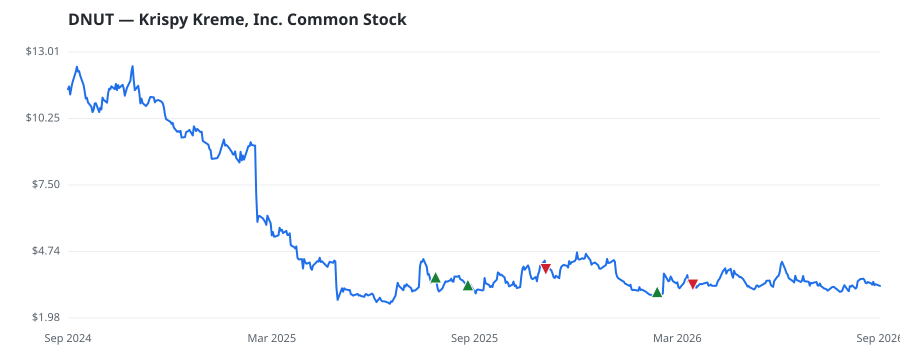

bullish · bearish · n/a — dots: price>SMA10 · SMA10>SMA50 · SMA50>SMA200 · up>down volume (20d)
Food & Staples Retailing · small cap
Members who bought DNUT earned a dollar-weighted +13.6% from their disclosure dates, versus +6.4% for the S&P 500 over the same holding windows (+7.2% alpha).

▲ green = a disclosed purchase · ▼ red = a disclosed sale (plotted on disclosure date)
Krispy Kreme Inc is a sweet-treat brand company. The company's Original Glazed doughnut is recognized for its hot-off-the-line, melt-in-mouth experience. It operates through its network of fresh Doughnut Shops, partnerships with retailers, and a growing e-commerce and delivery business. The company conducts its business through the following three reported segments: U.S., which includes all operations in the United States; International, which includes operations in the U.K., Ireland, Australia, New Zealand, Canada, Japan, and Mexico; and Market Development, which includes franchise operations RETAIL-FOOD STORES · website
| Revenue | $1.5B | Net income | $-523.8M |
|---|---|---|---|
| Operating income | $-469.3M | Diluted EPS | $-3.04 |
| Assets | $2.6B | Equity | $652.8M |
| Member | Chamber | Out-performer | Disclosed buys $ | Return on buys |
|---|---|---|---|---|
| Tim Moore | house | yes | $65K | +13.6% |
Disclosed $ figures are bracket midpoints — filings report ranges (e.g. $1,001–$15,000), not exact amounts.